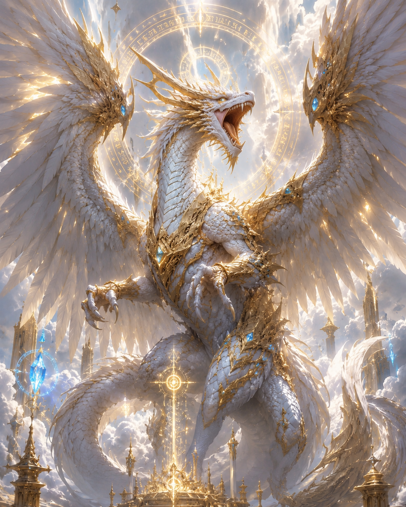
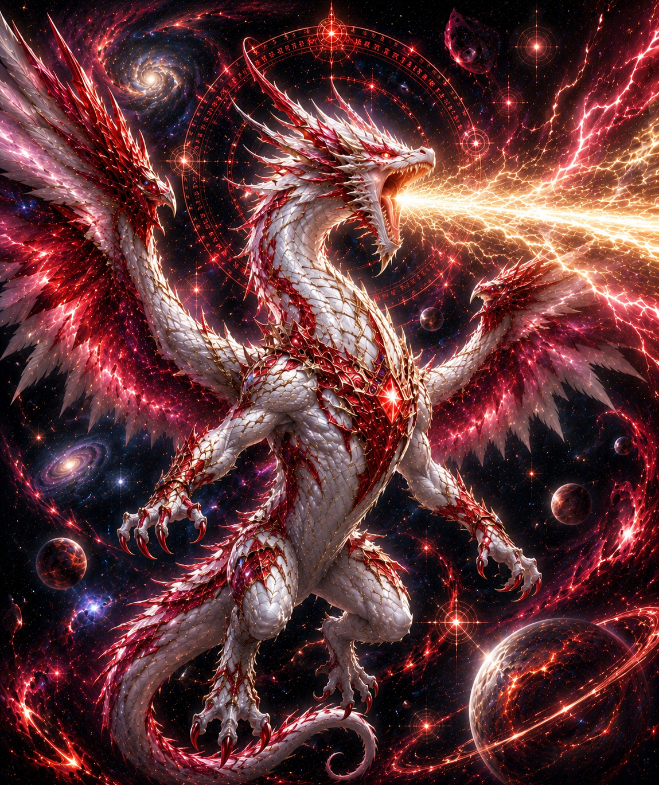
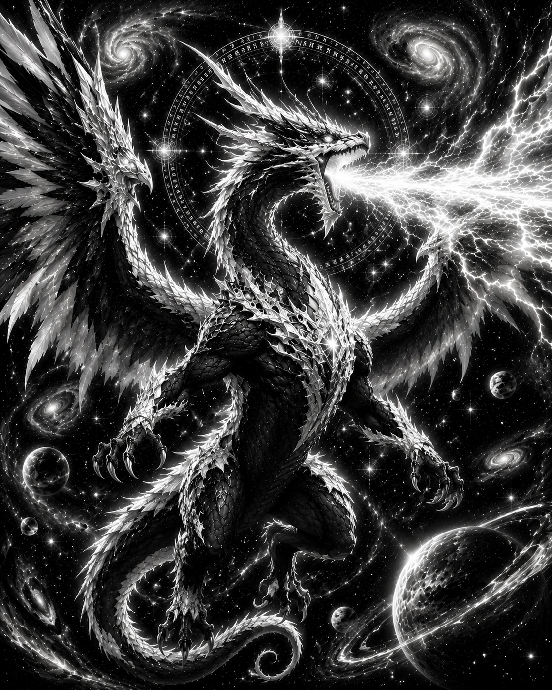

Um dragão semi arcanjo celestial de 3 aparências
Ele é o guardião dos 1000 portões do celestiais, usando seu poder de semi infinito ele pode acabar com qualquer coisa espiritual ou não, existe um unico jeito de domalo e destruilo... basta destruir todos os portões que ele protege "super fácil" . Não pense que e tão simples, cada vez que você for tentar destuir um portão vai precisar derrotalo e para destruir os portôes
Ele vive em um espaço criado por ele, dentro da sua mente